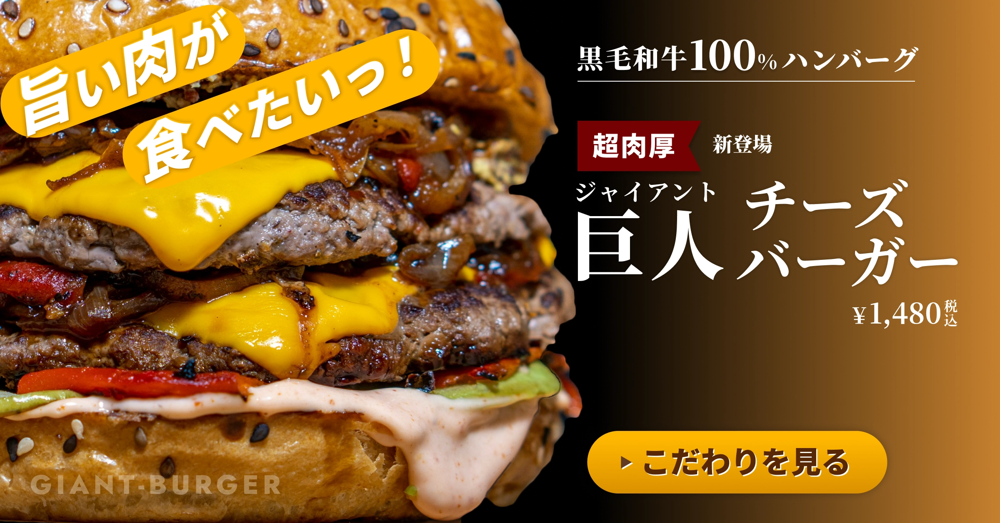
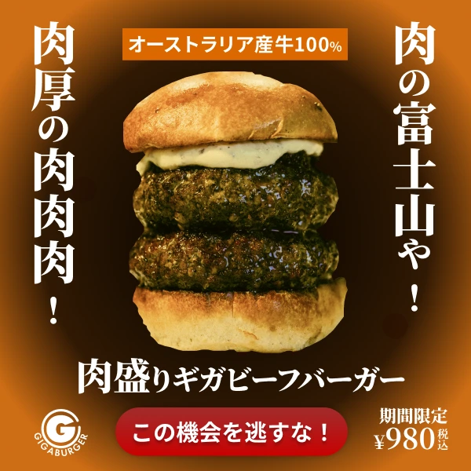
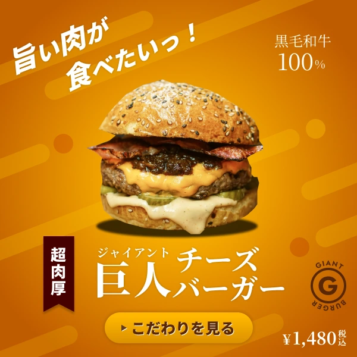
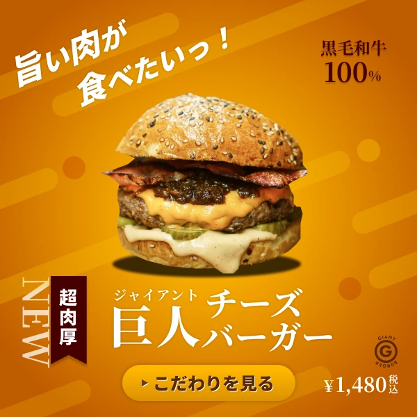
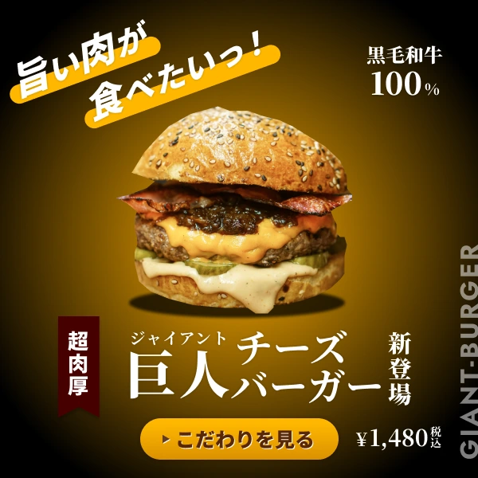
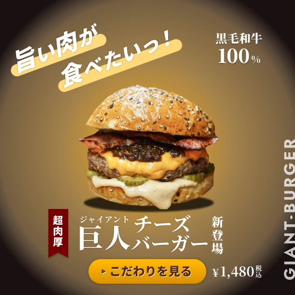

新作ハンバーガーのバナー
原寸大バナーと制作過程をご覧になれます。

10代〜40代の男性をターゲットに、新発売ハンバーガーの告知バナーとして制作しました。
キャッチフレーズは「旨い肉が食べたい」に決定。縦読みで「肉食」と読める仕掛けを入れ、
食欲を強く刺激するようオレンジ系の暖色を基調に使用しています。
ハンバーガーをスポットライトが当たったような演出にし、キャッチフレーズは斜め配置で勢いを出しました。
黒毛和牛100%や商品名、価格、ロゴをバランス良く配置し、視認性と食欲を両立させることを意識しています。
Variation
サイズ違いのバリエーションです。
-
1200×628 横長

ハンバーガーの画像を上下断ち切りにして迫力を出しました。
Photoshopのツールを使って切り抜き面が滑らかにマスクされるように加工しました。
Before → After
バナーの改善過程です。
-
Before

-
After
Before：要素を適当に並べただけで視線が散漫になり、キャッチフレーズも商品画像に分断されていました。
After：重要なキャッチフレーズを大きく左上に配置、各要素に適切な大きさの差をつけました。
結果：視線誘導に成功し、ボタンを押す訴求力を高めています。
Before：オーストラリア産牛肉表記や「この機会を逃すな!」のフレーズを使用
After：黒毛和牛100％表記にして「こだわりをみる」のフレーズに変更
結果：押し売り的な安売り感を排除して、余裕を持った高級感を演出に成功しました。
Before：食欲を刺激しにくいハンバーガーの画像
After：ハンバーガの画像を変更し、肉の質感と照りを強調する加工をPhotoshopで行いました。
結果：ターゲットである男性の「旨い肉が食べたい」という欲求を強く引き出すデザインになりました。
History
細かい制作過程です。
-

1.バナー制作講座の課題に沿って作ったものです。（キャッチフレーズや商品名などは講座とは変えてあります）
-

2.優先順位をつけて要素の大きさに変化をつけましたが、あしらいは試行錯誤していました。
-

3.背景をバナー製作講座の物と差別化を図るため、ハンバーガーにスポットライトを当てるアイディアを思い付きました。
-

4.スポットライトの位置をハンバーガーの中心に来るようにして、明るい範囲を調整して完成です。